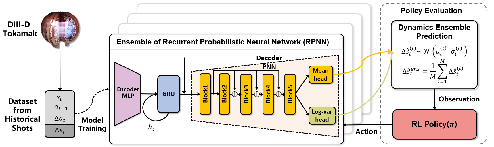
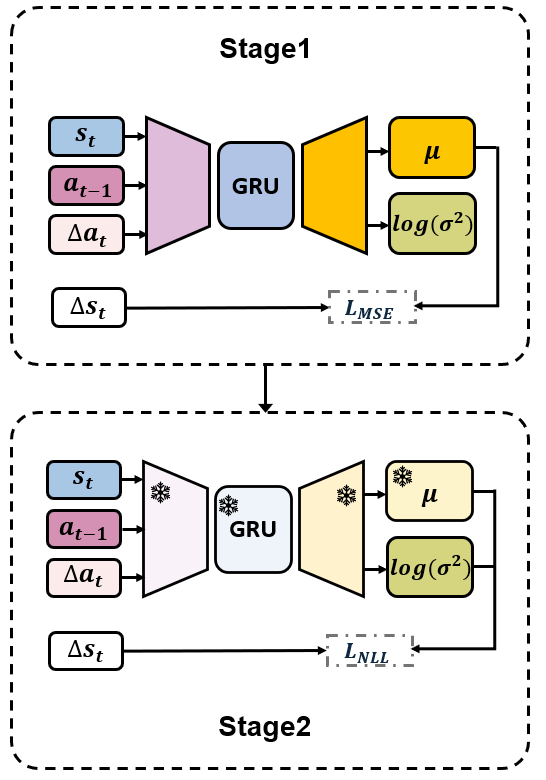

Abstract
Offline reinforcement learning (RL) offers a promising route for developing plasma controllers from historical tokamak data, since online trial-and-error on real devices is costly and risky. However, progress in this direction remains difficult to measure due to the lack of a standardized offline RL benchmark for realistic multi-actuator, long-horizon plasma control problems in nuclear fusion. We introduce RL4F, an Offline Reinforcement Learning Benchmark for Plasma Control in Nuclear Fusion, providing closed-loop evaluation environments and baseline comparisons across four full-profile tracking tasks: rotation, density, temperature, and pressure. The dynamics function underlying the evaluation environment is built from historical discharge data from DIII-D, a real-world tokamak. We evaluate a broad set of imitation learning and offline RL baselines under a unified protocol. We find that offline model-based RL methods obtain the best average performance on most objectives, although no single method dominates all tasks, highlighting the importance of dynamics modeling in complex, long-horizon plasma control tasks. To foster further research, we open-source the codebase, datasets, and evaluation framework, providing a benchmark not only for the fusion community but also for algorithm development in offline RL. We evaluate a broad set of imitation learning and offline RL baselines under a unified protocol. We find that offline model-based RL methods obtain the best average performance on most objectives, although no single method dominates all tasks, highlighting the importance of dynamics modeling in complex, long-horizon plasma control tasks. To foster further research, we open-source the codebase, datasets, and evaluation framework, providing a benchmark not only for the fusion community but also for algorithm development in offline RL.
Simulator

Given the limited accessibility of real tokamak devices, we train a reference dynamics model as a digital twin. The reference dynamics model is trained from historical DIII-D experimental discharges and is used to generate offline training data and to provide the closed-loop evaluation environment. As shown below, we adopt a two-stage RPNN training procedure.
Stage 1 Mean Optimization
The first stage optimizes the predictive mean using a mean-squared error objective.
Stage 2 Uncertainty Calibration
The second stage initializes from the first-stage checkpoint, freezes the predictive backbone, and trains the log-variance head using a negative log-likelihood objective, thereby calibrating uncertainty without changing the learned mean dynamics.

Results
Profile scores across different control tasks (0-100, higher is better). Best score in each column is highlighted in yellow.
| Algorithm | Rotation | Density | Temperature | Pressure | Q | βN |
|---|---|---|---|---|---|---|
| GCIL | 55.16 | 71.60 | 62.78 | 7.82 | 14.76 | 13.61 |
| TD3BC | 84.13 | 76.40 | 72.60 | 42.75 | 38.12 | 47.19 |
| CQL | 80.74 | 73.47 | 46.10 | 97.27 | 14.70 | 67.53 |
| IQL | 64.96 | 78.91 | 71.92 | 79.95 | 13.44 | 80.67 |
| EDAC | 82.71 | 38.23 | 18.04 | 79.35 | 33.52 | 100.00 |
| MCQ | 72.27 | 78.47 | 90.97 | 66.24 | 19.18 | 89.86 |
| PPO | 100.00 | 100.00 | 100.00 | 100.00 | 100.00 | 100.00 |
| COMBO | 98.20 | 96.97 | 85.68 | 100.00 | 66.17 | 100.00 |
| MOPO | 97.52 | 96.11 | 97.52 | 100.00 | 69.84 | 100.00 |
| MOBILE | 26.86 | 12.88 | 19.02 | 83.62 | 10.91 | 100.00 |
| RAMBO | 100.00 | 3.03 | 41.44 | 100.00 | 41.30 | 100.00 |
| BAMCTS | 8.75 | 38.71 | 0.53 | 0.00 | 28.97 | 0.00 |
Visualisation Results
Closed-loop tracking rollouts with actuator signals shown side by side.
BibTeX
@misc{fu2026offline,
title={Offline Reinforcement Learning for Plasma Control in Nuclear Fusion: Codebase and Benchmark},
author={Fu, Yang and Bao, Haomin and Sonker, Rohit and Hu, Xiaoyan and Venugopal, Aravind and Schneider, Jeff and Chen, Jiayu},
year={2026},
eprint={2606.07550},
archivePrefix={arXiv},
primaryClass={cs.LG},
url={https://arxiv.org/abs/2606.07550}
}